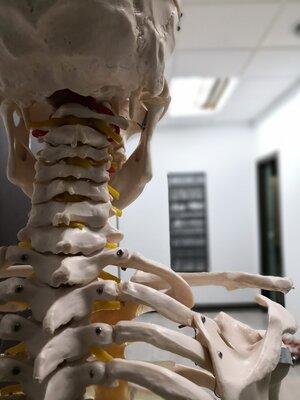

What is Osteopathy
Osteopathy is a form of manual therapy that focuses on the diagnosis and treatment of problems primarily within the musculoskeletal system. It works on the principal that the well-being of an individual relies on the way that bones, muscles, ligaments and connective tissue work with each other. Osteopaths take a holistic view when treating patients and will look at many different factors outside of the area of pain, such as your exercise, work and lifestyle that can also influence your body. Osteopathic treatment consists of a combination of hands-on techniques such as massage, stretching, mobilisation and joint manipulation, as well as prescribing exercises, giving advise and providing education about the presenting complaint. All osteopaths must complete a minimum of 4 years of undergraduate training before they can use the title ‘Osteopath’. During their studies, osteopaths gain an in-depth knowledge of anatomy, physiology, neurology and technique and must also complete a minimum of 1000 clinical hours. After graduating all osteopaths must also complete a minimum of 30 hours of continued professional development each year.
Osteopathy is a form of manual therapy that focuses on the diagnosis and treatment of problems primarily within the musculoskeletal system. It works on the principal that the well-being of an individual relies on the way that bones, muscles, ligaments and connective tissue work with each other. Osteopaths take a holistic view when treating patients and will look at many different factors outside of the area of pain, such as your exercise, work and lifestyle that can also influence your body. Osteopathic treatment consists of a combination of hands-on techniques such as massage, stretching, mobilisation and joint manipulation, as well as prescribing exercises, giving advise and providing education about the presenting complaint. All osteopaths must complete a minimum of 4 years of undergraduate training before they can use the title ‘Osteopath’. During their studies, osteopaths gain an in-depth knowledge of anatomy, physiology, neurology and technique and must also complete a minimum of 1000 clinical hours. After graduating all osteopaths must also complete a minimum of 30 hours of continued professional development each year.